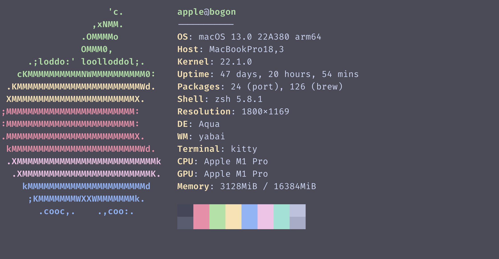
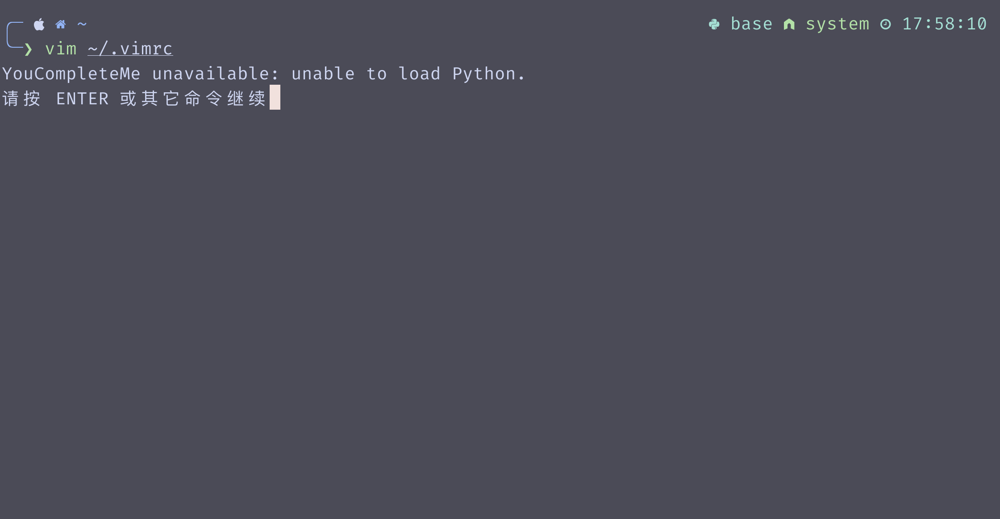
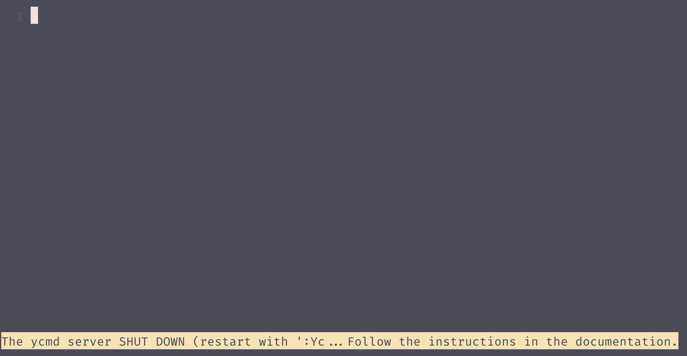

Getting Started
关于折腾
事实上本书大部分内容都在讲怎么“折腾”。也许很多人都认为，有折腾的时间不如拿来干其他的事情， 能用几乎开箱即用的vscode为什么还要去折腾(neo)vim呢？这确实有道理，但我觉得我在大学中收获最大的 不是了解了任意一门知识，而是通过折腾各种东西具有了
- 自己熟悉并高效（？）的workflow
- 排除bug的能力，包括搜索能力，阅读文档能力等等
- 反复试错的耐心和经验
- ...
其实很多人不愿意尝试新鲜的东西是因为不愿意踏出舒适区，不过我认为对于计算机学生，一个很好的品质是 愿意尝试新的东西，毕竟跟上时代的步伐是非常重要的。至于折腾了这么多东西有没有用？应该说这些东西被 人推荐都是因为它们有过人之处，例如为什么还有人在用vim? 因为vim具有超强的可扩展性，因为vim的编辑哲学， 因为vim+tmux能构成一套workflow，等等。当然适合自己的才是最好的。
关于信息检索和解决问题
信息检索是计算机学生应当重视的一项能力。对此，CS自学指南是这样说的：
碰到问题，记住第一件事是 翻阅文档 ，不要一开始就直接搜索或者找人问，翻阅FAQ可能会快速找到答案。
信息检索，我的理解来说，实际上就是灵活运用搜索引擎中，方便快捷的搜到需要的信息，包括但不限于编程。
编程最重要的，就是 STFW(search the fucking web) 和 RTFM(read the fucking Manual) ，首先要读文档，第二要学会搜索，网上那么多资源，怎么用，就需要信息检索。
本书也不能，而且不会将所有内容事无巨细地讲明白，去了解更深入的内容，或者是定制自己的需求，这需要读者具有良好的信息检索能力。本书 也会用例子给出如何搜索自己需要的内容。同时，笔者在身边发现，很多中国同学在查看报错信息和文档时对英文都有着畏惧心理，我在此的建议是大胆跃出自己的舒适区， 多花一些时间去做，自己解决问题的过程也是学到新东西的过程。
我很喜欢的一个视频是对学计算机的人来说最重要的一件事。遇到问题很重要的心态是先去自己试一试，用自己能找到的途径试着解决这个问题，遇到ERROR时不要害怕，先想一想。如果自己解决了但没成功，可以将问题和自己尝试的解决方法一起提问，我觉得这就是一种很好的提问方式。
Tips
下面我们来仿照上面的视频去解决一个问题，在这个过程中学习一些如何解决问题的方式。
Vim安装YouCompleteMe
Vim是一个古老而又强大的编辑器，而YouCompleteMe(YCM)是Vim中一个“臭名昭著”的补全插件。下面我将在macOS 13.0上安装这一插件，并解决安装中出现的问题。注意这里并不需要理解vim操作，重点是解决报错的方法。

我们首先通过修改配置文件安装YCM，这一步在大多数教程中都能找到（笔者采用Vundle，一款vim插件管理器）。但在打开vim时发生了如下错误：

显示Unable to load Python.但通过在终端中运行vim --version发现vim支持python/dyn和python3/dyn，而不是支持python，为了验证这一点，我们打开vim，并在command模式中输入:echo has('python')和:echo has('python3')，发现两者都返回0，说明是Vim本身的问题。因此我们google:
mac vim has('python') 0
这里搜索的方式为：平台名（因为该vim是mac自带）+vim（程序名）+不该出现的信息。
在stackexchange.com中找到How do I install vim on OSX with Python 3 support?。可见
The version of Vim you're running is the built-in Apple version, which you can see in the second line("Compiled by root@apple.com"). You can install either the vim or macvim packages with Homebrew and they will have Python 3 built in, since, as ParthS007 mentioned, the default Python is Python 3. 用Homebrew（mac的包管理器）安装vim后发现现在的vim支持python3。
再者，我们也能找到How to get my Vim and MacVim to find python3?，可以直接在配置文件.vimrc中设置python路径。
现在打开vim，发现某个东西无法运行(ycmd server)，  虽然看不懂这是什么东西，但提示中写道Follow the instructions in the documentation.，这提醒我们：
Tips
读文档是解决问题的重要途径，这里的文档指的是官方文档，而不是某个博客。官方文档通常是最权威的，而且往往能解决你的问题。尤其是安装某个东西需要注意文档中的requirements和安装步骤。
在GitHub上找到YCM的文档发现需要编译YCM，文档中已经明确的给出了指令：
1 2 | |
third_party/mrab-regex/setup.py，下一点建议是
Tips
GitHub仓库中通常有一个模块issue，其中记录了用户的问题和官方回答。事实上，很多问题都是之前的人遇到过的。
这里我们在issue里搜索mrab-regex/setup.py，发现了The third party mrab-regex is empty, and the url for it is invalid。发现需要运行git submodule update --init --recursive。运行以下指令:
1 2 3 | |
setup.py。
Tips
大胆尝试，不要害怕报错或者整个搞砸，大不了再重新装一次。
再次运行python3 install.py, 发现安装成功！但启动vim时，仍报错server shutting down。这时候不要急，GitHub上对于这个问题也有详细的描述Troubleshooting steps for ycmd server SHUT DOWN，通过尝试wiki中的debug步骤（Check that ycmd can start manually），我们能发现安装YCM不能使用conda环境，使用其他python环境重新安装后，YCM就能正常使用了！
笔者在写这一部分之前，也没有安装过YCM，或许你安装时遇到的问题和我大不相同，但还是希望我的解决办法能够提供给你一些灵感：
- 阅读官方提供的README
- 理解报错信息，提取关键词
- 利用好GitHub的issue和wiki
- 利用好搜索引擎和编程社区，包括Google, StackOverflow, Reddit, StackExchange, Quora, 知乎，CSDN...
- 大胆尝试，坚持尝试，不要害怕